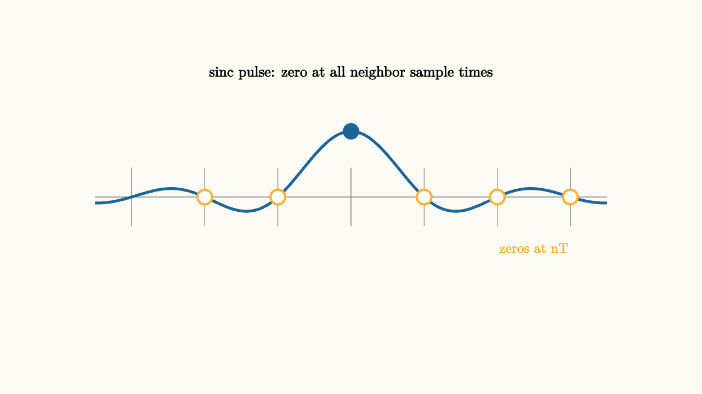
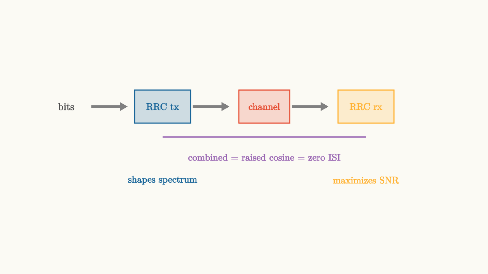

PAM Needs Pulse Shaping
Imagine you are an enthusiastic but inexperienced engineer tasked with building a digital transmitter. You know that PAM works by sending one of several amplitude levels for each symbol. So your first attempt is exactly what it sounds like: for each symbol, hold the voltage at the right level for the duration $T$, then jump to the next level for the next symbol.
You connect your transmitter to the channel. The receiver samples at the right times. And initially, it works beautifully.
Then you increase the symbol rate. Trying to push more bits per second through the channel, you shorten $T$. At some rate, the receiver starts making errors. You increase the symbol rate further, and the system collapses. Errors everywhere, almost random.
What went wrong? Nothing broke. The math betrayed you. Specifically, the relationship between the time domain and the frequency domain did something you were not expecting, and understanding it completely changes how transmitters are designed.
Rectangular pulses are wide in frequency
Every signal that is compact in time is spread in frequency, and vice versa. This is not just a rule of thumb. It is a mathematical fact arising from the Fourier transform.
A rectangular pulse of duration $T$ has a Fourier transform that looks like a sinc function:
The main lobe of this sinc extends to frequencies around $1/T$. But the sinc does not stop there. It has infinite sidelobes extending to all frequencies, falling off only as $1/f$. The energy never fully disappears. A rectangular pulse officially has infinite bandwidth.
Now think about what happens when you increase the symbol rate by halving $T$. The bandwidth of the rectangular pulse doubles. Your signal now occupies twice the frequency range. At high enough symbol rates, you are spraying energy across a large band, interfering with other users and violating spectral regulations.
source
background = [0.985, 0.98, 0.955, 1]
camera = Camera(4.8b)
"rectangular pulse"
mesh taxis = stroke{GRAY, 1.2} Line(start: [-3.5, 0.7, 0], end: [3.5, 0.7, 0])
mesh faxis = stroke{GRAY, 1.2} Line(start: [-3.5, -1.0, 0], end: [3.5, -1.0, 0])
mesh rect = block {
. stroke{BLUE, 3} Line(start: [-1.2, 0.7, 0], end: [-1.2, 1.7, 0])
. stroke{BLUE, 3} Line(start: [-1.2, 1.7, 0], end: [1.2, 1.7, 0])
. stroke{BLUE, 3} Line(start: [1.2, 1.7, 0], end: [1.2, 0.7, 0])
}
mesh tlabel = color{BLUE} center{[0, 2.1, 0]} Text("rectangular pulse in time", 0.72)
mesh sinc = stroke{RED, 2.5} ExplicitFunc(|f| -1.0 + 0.85 * sin(3.14 * f) / (3.14 * f + 0.001), [-3.2, 3.2, 300])
mesh flabel = color{RED} center{[2.5, -0.55, 0]} Text("sinc in frequency", 0.72)
mesh wide = stroke{PURPLE, 1.5} Line(start: [-3.2, -1.7, 0], end: [3.2, -1.7, 0])
mesh wlabel = color{PURPLE} center{[0, -2.1, 0]} Text("energy spreads to all frequencies", 0.72)
play Write(1.0)
play Fade(0.4)
"faster rate = wider bandwidth"
rect = block {
. stroke{BLUE, 3} Line(start: [-0.5, 0.7, 0], end: [-0.5, 1.9, 0])
. stroke{BLUE, 3} Line(start: [-0.5, 1.9, 0], end: [0.5, 1.9, 0])
. stroke{BLUE, 3} Line(start: [0.5, 1.9, 0], end: [0.5, 0.7, 0])
}
tlabel = color{BLUE} center{[0, 2.25, 0]} Text("shorter pulse: 2x symbol rate", 0.72)
sinc = stroke{RED, 2.5} ExplicitFunc(|f| -1.0 + 0.85 * sin(1.57 * f) / (1.57 * f + 0.001), [-3.2, 3.2, 300])
flabel = color{RED} center{[2.5, -0.4, 0]} Text("twice as wide in frequency", 0.72)
play Trans(1.1)
play Fade(0.3)This is the core tension in pulse design. You want to send symbols quickly (high symbol rate), but each pulse occupies a minimum bandwidth related to $1/T$. You want to fit in a limited channel bandwidth, but that limits how fast you can send symbols.
The inter-symbol interference disaster
Now add a second problem: even if you ignore the bandwidth issue, rectangular pulses at high rates create another catastrophe.
A real channel is not an ideal wire. It has some frequency response, meaning it attenuates some frequencies more than others. Even a mildly non-flat frequency response will distort a rectangular pulse. The sharp edges get rounded. The flat top gets tilted. And the pulse starts to spread in time, beyond its intended duration $T$.
Once the pulse spreads beyond $T$, it leaks into the time slots of neighboring symbols. When the receiver samples symbol $k$, it gets contributions from symbol $k-1$ and symbol $k+1$ (and further neighbors if the spread is large). Each surrounding symbol adds a little bit of its amplitude to the current sample.
This is inter-symbol interference, or ISI. And it is insidious because the interference depends on the surrounding data. If you are sending random symbols, the interference at each sample time is essentially random. It is not a fixed bias that you can calibrate out. It appears as noise.
source
background = [0.985, 0.98, 0.955, 1]
camera = Camera(4.8b)
"clean samples"
mesh axis = stroke{GRAY, 1.2} Line(start: [-3.5, 0, 0], end: [3.5, 0, 0])
mesh p1 = stroke{BLUE, 2.5} ExplicitFunc(|t| 0.9 * exp(-8.0 * (t + 2.0) * (t + 2.0)), [-3.5, 3.5, 250])
mesh p2 = stroke{ORANGE, 2.5} ExplicitFunc(|t| -0.6 * exp(-8.0 * t * t), [-3.5, 3.5, 250])
mesh p3 = stroke{GREEN, 2.5} ExplicitFunc(|t| 0.75 * exp(-8.0 * (t - 2.0) * (t - 2.0)), [-3.5, 3.5, 250])
mesh s1 = fill{WHITE} stroke{BLUE, 2} center{[-2.0, 0.9, 0]} Circle(0.12)
mesh s2 = fill{WHITE} stroke{ORANGE, 2} center{[0.0, -0.6, 0]} Circle(0.12)
mesh s3 = fill{WHITE} stroke{GREEN, 2} center{[2.0, 0.75, 0]} Circle(0.12)
mesh title = color{BLACK} center{[0, 1.7, 0]} Text("narrow pulses: samples are clean", 0.72)
play Write(0.9)
play Fade(0.4)
"spreading pulses cause ISI"
p1 = stroke{BLUE, 2.5} ExplicitFunc(|t| 0.9 * exp(-1.0 * (t + 2.0) * (t + 2.0)), [-3.5, 3.5, 250])
p2 = stroke{ORANGE, 2.5} ExplicitFunc(|t| -0.6 * exp(-1.0 * t * t), [-3.5, 3.5, 250])
p3 = stroke{GREEN, 2.5} ExplicitFunc(|t| 0.75 * exp(-1.0 * (t - 2.0) * (t - 2.0)), [-3.5, 3.5, 250])
mesh sum = stroke{PURPLE, 3} ExplicitFunc(|t| 0.9 * exp(-1.0 * (t + 2.0) * (t + 2.0)) - 0.6 * exp(-1.0 * t * t) + 0.75 * exp(-1.0 * (t - 2.0) * (t - 2.0)), [-3.5, 3.5, 300])
s1 = fill{RED} stroke{RED, 2} center{[-2.0, 0.9 * exp(-1.0 * 4.0) - 0.6 * exp(-1.0 * 4.0) + 0.75 * exp(-1.0 * 16.0), 0]} Circle(0.12)
s2 = fill{RED} stroke{RED, 2} center{[0.0, 0.9 * exp(-1.0 * 4.0) - 0.6 + 0.75 * exp(-1.0 * 4.0), 0]} Circle(0.12)
s3 = fill{RED} stroke{RED, 2} center{[2.0, 0.9 * exp(-1.0 * 16.0) - 0.6 * exp(-1.0 * 4.0) + 0.75, 0]} Circle(0.12)
title = color{BLACK} center{[0, 1.7, 0]} Text("wide pulses: neighbors corrupt samples", 0.72)
play Trans(1.2)
play Fade(0.4)The purple sum signal has three pulses smearing into each other. The sample at each symbol time (red dot) is corrupted by contributions from the other two symbols. The original clean sample values are gone.
Nyquist's magical insight
In 1928, Harry Nyquist asked a beautiful question: is there a way to design a pulse that spreads in time (allowing narrow bandwidth) but whose spreading is arranged so that it is always zero at the sample times of neighboring symbols?
His answer was yes, and it is one of the most elegant results in all of communications theory.
The Nyquist criterion states: a pulse $p(t)$ causes zero ISI if and only if
The pulse can be as wide as you like in time. It can overlap with every neighboring symbol's time slot. But at the sampling instants of those neighbors, it must equal exactly zero. The neighbors' pulses contribute nothing to your sample.
This is remarkable. It says you can have both narrow bandwidth and zero ISI, as long as you design the pulse cleverly. The pulse is allowed to be large at times other than the symbol instants. It just needs to be zero at the specific moments the neighboring receivers sample.
The simplest pulse satisfying this condition is the sinc function:
The sinc is one at $t=0$, and it crosses zero at $t = \pm T, \pm 2T, \pm 3T, \ldots$ exactly where neighboring symbols sample. This means with sinc pulses, there is zero ISI regardless of how many pulses overlap.

source
background = [0.985, 0.98, 0.955, 1]
camera = Camera(4.8b)
mesh diagram = block {
. stroke{GRAY, 1} Line(start: [-3.5, 0, 0], end: [3.5, 0, 0])
. stroke{GRAY, 0.8} Line(start: [-3.0, -0.4, 0], end: [-3.0, 0.4, 0])
. stroke{GRAY, 0.8} Line(start: [-2.0, -0.4, 0], end: [-2.0, 0.4, 0])
. stroke{GRAY, 0.8} Line(start: [-1.0, -0.4, 0], end: [-1.0, 0.4, 0])
. stroke{GRAY, 0.8} Line(start: [0.0, -0.4, 0], end: [0.0, 0.4, 0])
. stroke{GRAY, 0.8} Line(start: [1.0, -0.4, 0], end: [1.0, 0.4, 0])
. stroke{GRAY, 0.8} Line(start: [2.0, -0.4, 0], end: [2.0, 0.4, 0])
. stroke{GRAY, 0.8} Line(start: [3.0, -0.4, 0], end: [3.0, 0.4, 0])
. stroke{BLUE, 3} ExplicitFunc(|t| 0.9 * sin(3.14159 * t) / (3.14159 * t + 0.0001), [-3.5, 3.5, 400])
. fill{BLUE} stroke{BLUE, 2} center{[0, 0.9, 0]} Circle(0.1)
. fill{WHITE} stroke{ORANGE, 2.5} center{[-2.0, 0, 0]} Circle(0.1)
. fill{WHITE} stroke{ORANGE, 2.5} center{[-1.0, 0, 0]} Circle(0.1)
. fill{WHITE} stroke{ORANGE, 2.5} center{[1.0, 0, 0]} Circle(0.1)
. fill{WHITE} stroke{ORANGE, 2.5} center{[2.0, 0, 0]} Circle(0.1)
. fill{WHITE} stroke{ORANGE, 2.5} center{[3.0, 0, 0]} Circle(0.1)
. color{BLACK} center{[0, 1.7, 0]} Text("sinc pulse: zero at all neighbor sample times", 0.72)
. color{ORANGE} center{[2.5, -0.7, 0]} Text("zeros at nT", 0.68)
}
"nyquist zero-ISI"
play Fade(0.7)The blue dot at $t=0$ is the pulse's intended sample value. The orange dots show the neighboring sample times, where the sinc crosses exactly zero. No matter what amplitudes the neighboring symbols have, they contribute nothing at this sample instant.
Why sinc fails in practice
The sinc pulse is the theoretical ideal. But it has a fatal practical problem: it extends forever in time.
To generate a sinc pulse, you would need to start infinitely far in the past and continue infinitely into the future. Obviously impossible. What you can do is truncate it, keeping only the central portion.
But truncation has consequences. When you chop off the tails of the sinc, the resulting pulse no longer has perfect zeros at the neighboring sample times. The zeros are slightly shifted or become non-zero. Inter-symbol interference reappears, even if small.
Worse, a sinc's tails decay slowly, as $1/t$. Even truncating at a moderate length leaves large tails that cause significant ISI. You need to keep many symbol periods worth of the pulse to get acceptably small ISI.
And there is a deeper problem: a perfect sinc pulse corresponds to a perfect rectangular spectrum. But a perfect rectangular spectrum requires an abrupt brick-wall cutoff at exactly $1/(2T)$ Hz. Real filters cannot do this. Any filter you build will have a transition band, some range of frequencies between "pass" and "stop". The sinc ideal is mathematically achievable but physically not.
The raised cosine: trading bandwidth for practicality
A family of pulses called raised cosine filters takes the sinc as a starting point and trades a bit of extra bandwidth for dramatically better practical behavior.
The raised cosine frequency response is:
The parameter $\alpha$ is the rolloff factor, ranging from 0 to 1. When $\alpha = 0$, you get the pure rectangular spectrum (the sinc pulse). When $\alpha = 1$, you get a fully rounded spectrum that occupies twice the minimum bandwidth.
The payoff for this extra bandwidth is enormous. The time-domain pulse tails of a raised cosine decay as $1/t^3$ rather than $1/t$. You can truncate the pulse after just a few symbol periods and still have excellent zero-ISI behavior.
source
param rolloff = 0.2
background = [0.985, 0.98, 0.955, 1]
camera = Camera(4.8b)
let RC_time = |alpha| ExplicitFunc(|t| 0.85 * cos(3.14159 * alpha * t) * sin(3.14159 * t) / (3.14159 * t * (1.0 - 4.0 * alpha * alpha * t * t + 0.0001)), [-3.2, 3.2, 400])
let RC_freq = |alpha| block {
. stroke{GRAY, 1} Line(start: [-3.2, -1.55, 0], end: [3.2, -1.55, 0])
. stroke{GRAY, 1} Line(start: [-3.2, -1.55, 0], end: [-3.2, -0.65, 0])
. stroke{ORANGE, 3} ExplicitFunc(|f| -1.55 + 0.75 * (1.0 - exp(-8.0 * (f * f - (1.0 + alpha) * (1.0 + alpha) * 0.7 * 0.7))), [-2.0 * (1.0 + alpha) * 0.75, 2.0 * (1.0 + alpha) * 0.75, 200])
}
"small rolloff"
mesh title = color{BLACK} center{[0, 2.1, 0]} Text("raised cosine: rolloff controls bandwidth vs tail length", 0.72)
mesh pulse = stroke{BLUE, 3} RC_time(alpha: $rolloff)
mesh axis = stroke{GRAY, 1.2} Line(start: [-3.5, 0, 0], end: [3.5, 0, 0])
mesh ticks = block {
. stroke{ORANGE, 1.8} Line(start: [-2.0, -0.2, 0], end: [-2.0, 0.2, 0])
. stroke{ORANGE, 1.8} Line(start: [-1.0, -0.2, 0], end: [-1.0, 0.2, 0])
. stroke{ORANGE, 1.8} Line(start: [0.0, -0.2, 0], end: [0.0, 0.2, 0])
. stroke{ORANGE, 1.8} Line(start: [1.0, -0.2, 0], end: [1.0, 0.2, 0])
. stroke{ORANGE, 1.8} Line(start: [2.0, -0.2, 0], end: [2.0, 0.2, 0])
}
mesh bw_label = color{DARK_GRAY} center{[0, -1.0, 0]} Text("small rolloff: narrow band, long tails", 0.68)
play Write(0.9)
play Fade(0.5)
"large rolloff"
rolloff = 0.8
pulse = stroke{GREEN, 3} RC_time(alpha: $rolloff)
bw_label = color{DARK_GRAY} center{[0, -1.0, 0]} Text("large rolloff: wider band, short tails", 0.68)
play Lerp(1.3)Watch the pulse shape change as you move the rolloff slider. At small values, the pulse has long, slowly decaying oscillating tails. These tails are manageable mathematically (the zeros are still exactly at sample times) but require a long filter to implement. At large rolloff, the tails die out much faster, making implementation easier at the cost of extra bandwidth.
In practice, systems often use rolloff values around 0.2 to 0.5. Wi-Fi 802.11a uses 0.25. Many cellular systems use around 0.22. The exact choice depends on how much bandwidth is available and how long a filter the hardware can support.
Splitting the pulse: root raised cosine
Here is a subtle but important engineering insight. The raised cosine filter is what you want the combined transmitter-receiver system to implement. But you should not put the entire raised cosine filter at the transmitter.
The reason involves noise. The receiver collects both the desired signal and noise from the channel. The receiver's filter determines how much noise enters the decision circuit. Specifically, the optimal filter for noise rejection is the matched filter, which is matched to the transmitted pulse shape.
If the transmitter applies the full raised cosine, then the optimal receiver filter is also a raised cosine. But two raised cosines in cascade give a raised cosine squared, which has poor ISI properties.
The clever solution: split the raised cosine symmetrically. Put the square root of the raised cosine spectrum at the transmitter, and put another square root at the receiver. Two square roots multiply to give the full raised cosine. The ISI condition is satisfied, and the receiver is a matched filter for the transmitter's pulse.
This is why you see "root raised cosine" (RRC or SRRC) filters everywhere in communications hardware. The transmitter's RRC pulse, when passed through the receiver's RRC matched filter, produces a raised cosine response with zero ISI at the sampling instants.

source
background = [0.985, 0.98, 0.955, 1]
camera = Camera(4.8b)
mesh diagram = block {
. color{DARK_GRAY} center{[-3.5, 0.6, 0]} Text("bits", 0.72)
. color{GRAY} Arrow(start: [-3.0, 0.6, 0], end: [-2.3, 0.6, 0])
. fill{alpha{0.2} BLUE} stroke{BLUE, 1.5} center{[-1.6, 0.6, 0]} Rect([1.1, 0.65])
. color{BLUE} center{[-1.6, 0.6, 0]} Text("RRC tx", 0.68)
. color{GRAY} Arrow(start: [-1.0, 0.6, 0], end: [-0.3, 0.6, 0])
. fill{alpha{0.2} RED} stroke{RED, 1.5} center{[0.4, 0.6, 0]} Rect([1.0, 0.65])
. color{RED} center{[0.4, 0.6, 0]} Text("channel", 0.68)
. color{GRAY} Arrow(start: [0.95, 0.6, 0], end: [1.65, 0.6, 0])
. fill{alpha{0.2} ORANGE} stroke{ORANGE, 1.5} center{[2.4, 0.6, 0]} Rect([1.1, 0.65])
. color{ORANGE} center{[2.4, 0.6, 0]} Text("RRC rx", 0.68)
. stroke{PURPLE, 2} Line(start: [-1.6, 0.0, 0], end: [2.4, 0.0, 0])
. color{PURPLE} center{[0.4, -0.4, 0]} Text("combined = raised cosine = zero ISI", 0.68)
. color{BLUE} center{[-1.6, -0.85, 0]} Text("shapes spectrum", 0.68)
. color{ORANGE} center{[2.4, -0.85, 0]} Text("maximizes SNR", 0.68)
}
"root raised cosine split"
play Fade(0.7)This split is elegant because it simultaneously satisfies two different design goals. The transmit filter shapes the spectrum (important for regulatory compliance and spectral efficiency). The receive filter maximizes signal-to-noise ratio (important for reliable detection). Neither filter alone can do both.
What ISI looks like in practice: the eye diagram
The easiest way to see whether ISI is under control is the eye diagram. You take the filtered signal after the receive filter and overlay many symbol periods on top of each other. The result looks like the cross-section of an eye.
When there is no ISI (good pulse shaping, correct timing), the eye is wide open. The received signal cleanly separates into distinct levels at the sampling instant. The vertical opening tells you the noise margin: how much noise can be added before an error occurs.
When ISI is present, the eye closes. Different data patterns cause different amounts of interference, and the eye becomes a blur of many possible paths. The receiver can no longer make reliable decisions.
The eye diagram is an intuitive diagnostic. A receiver engineer who says "the eye is closed" means that inter-symbol interference or noise has made reliable detection difficult or impossible.
Bandwidth efficiency: bits per second per hertz
With proper pulse shaping, the occupied bandwidth for a PAM signal with symbol rate $R_s$ and rolloff $\alpha$ is:
The number of bits per second is:
So the spectral efficiency, in bits per second per hertz, is:
With 16-QAM ($\log_2 M = 4$) and rolloff 0.25, you get $\eta = 4/1.25 = 3.2$ bits/s/Hz. With 64-QAM and rolloff 0.1, you get about 5.5 bits/s/Hz. Modern 5G with 256-QAM and tight rolloff can exceed 7 bits/s/Hz.
This formula makes clear why communication engineers care about both modulation order and rolloff. Each factor multiplies directly into spectral efficiency.
Putting it together
Pulse shaping is not just a detail of transmitter design. It is a fundamental trade-off between three things that you want simultaneously:
High symbol rate (more bits per second) requires short symbol periods, which means wide bandwidth. Low ISI requires zero crossings at neighboring sample times, achievable with Nyquist pulses. Narrow bandwidth requires smooth, slowly varying pulses, which the raised cosine family provides at the cost of some extra bandwidth beyond the minimum.
You cannot have all three at the optimum simultaneously. The raised cosine family parameterizes the trade-off between bandwidth and how easy the pulse is to implement. The rolloff factor is your knob for navigating that trade-off.
Every practical PAM system uses root raised cosine pulse shaping. Your cable modem uses it. Your phone uses it. Your Wi-Fi uses it. Under the hood of every digital link is the elegant mathematics of Nyquist, asking: how can a pulse that spreads in time still leave its neighbors completely alone at their sampling instants?
The answer is beautiful. And we have just explored why.